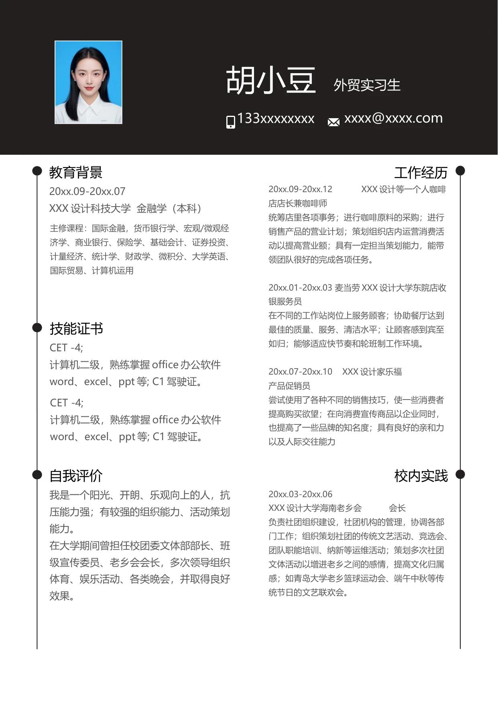

胡小豆
外贸实习生
xxxx@xxxx.com
教育背景
工作经历
20xx.09-20xx.07
XXX 设计科技大学 金融学（本科）
CET -4;
计算机二级，熟练掌握office 办公软件
word、excel、ppt 等; C1 驾驶证。
我是一个阳光、开朗、乐观向上的人，抗
压能力强；有较强的组织能力、活动策划
能力。
在大学期间曾担任校团委文体部部长、班
级宣传委员、老乡会会长，多次领导组织
体育、娱乐活动、各类晚会，并取得良好
效果。
技能证书
自我评价
CET -4;
计算机二级，熟练掌握office 办公软件
word、excel、ppt 等; C1 驾驶证。
校内实践
主修课程：国际金融，货币银行学、宏观/微观经
济学、商业银行、保险学、基础会计、证券投资、
计量经济、统计学、财政学、微积分、大学英语、
国际贸易、计算机运用
133xxxxxxxx
20xx.09-20xx.12
XXX 设计等一个人咖啡
店店长兼咖啡师
统筹店里各项事务；进行咖啡原料的采购；进行
销售产品的营业计划；策划组织店内运营消费活
动以提高营业额；具有一定担当策划能力，能带
领团队很好的完成各项任务。
20xx.01-20xx.03 麦当劳XXX 设计大学东院店收
银服务员
在不同的工作站岗位上服务顾客；协助餐厅达到
最佳的质量、服务、清洁水平；让顾客感到宾至
如归；能够适应快节奏和轮班制工作环境。
20xx.07-20xx.10 XXX 设计家乐福
产品促销员
尝试使用了各种不同的销售技巧，使一些消费者
提高购买欲望；在向消费宣传商品以企业同时，
也提高了一些品牌的知名度；具有良好的亲和力
以及人际交往能力
20xx.03-20xx.06
XXX 设计大学海南老乡会
会长
负责社团组织建设，社团机构的管理，协调各部
门工作；组织策划社团的传统文艺活动、竞选会、
团队职能培训、纳新等运维活动；策划多次社团
文体活动以增进老乡之间的感情，提高文化归属
感；如青岛大学老乡篮球运动会、端午中秋等传
统节日的文艺联欢会。